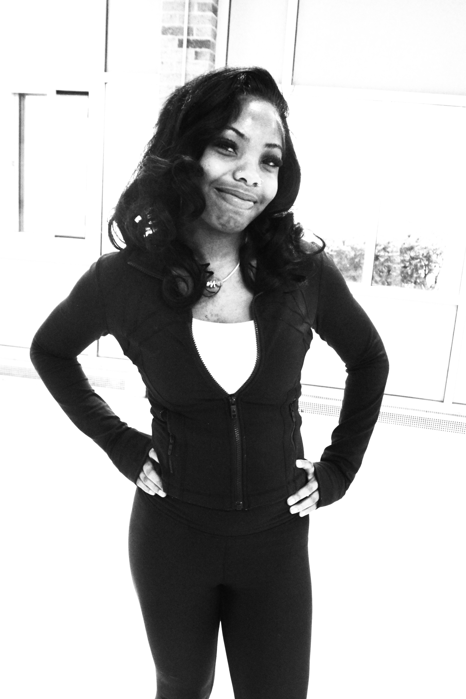
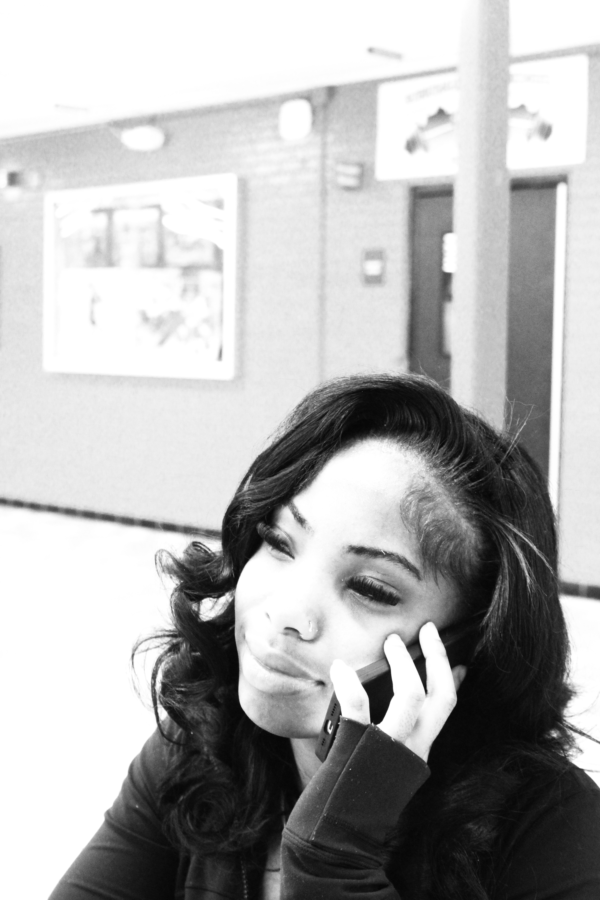

Aden
Seven
Anderson
modern editorial / visual instinct / full-time lover
Issue 001
Printed Noise
I don’t design for clarity. I design for friction. The pause before understanding is the point.

design is a feeling before it is a product
Issue 002
Untitled Experiment
Photography as instinct. Layouts that feel like mistakes. A refusal to clean things up too much.
